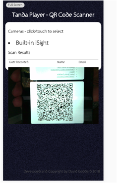
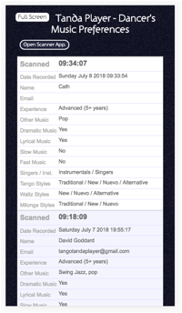

In the situation where regular dancers at a venue become known to the DJ the music may be steered toward their tastes whether that is just for the cortinas or the playing of alternative music etc. But when a dancer goes to a new venue or a visiting DJ comes who does not know the dancers – what then?
The Tanda Player offers a possible solution:
· The Dancer finds out about Tanda Player’s music questionnaire from the DJ
· The Dancer then fills out the form on-line and saves the generated QR Code to their phone or prints it out to keep in their wallet.
· When the Dancers arrive at the venue, they are greeted and their codes are scanned using a mobile phone or tablet or similar setup by the event organisers or the DJ themselves.
· The scanned codes are converted back into the answers given on the questionnaire and the DJ can view these via an application in the suite using their phone or a tab in the browser they are using to DJ from.
The DJ needs to let people know this is a feature that they use. It might be an idea to produce a simple poster which highlights their use of Tanda Player and provides a QR Code that can be scanned by the dancers phone (provided they have a QR Code scanner installed) and this passes on the web address of the questionnaire where they can get their own QR Code.
The QR Code for the questionnaire is here
Tanda Player:heroku:tandaplayer:images:questionnaire_qr_code.png"
v:shapes="Picture_x0020_9">
Make sure this
printed reasonably large as it makes it easier to scan on phones.
The questionnaire is
designed to be generic enough that all Tanda Player DJs will be able to
interpret the results and it is not tied into their specific setup. Therefore
when a dancer arrives at another venue using the system they can re-use the
coded responses at that venue too.
The questionnaire is
not intended to be a data capture and the name and email address on the form
are purely optional but the dancer can provide this if they are happy to share
it with the DJ. These can be left blank if the dancer wishes to remain
anonymous. When the Tanda Player is switched off the data is lost to the DJ.
The scanner is easily run from a mobile phone or a tablet but can also run from a desktop or laptop computer.
The following image shows the scanner in action with the realtime camera view showing a mobile phone being held up with a QR Code displayed.
When this is recognised it will briefly cause the display to show the name and date for the person if entered. All details are then sent to the DJ.
Tanda Player:heroku:tandaplayer:images:scanner_app.png"
v:shapes="Picture_x0020_10">
At the venue the DJ
provides something which can run the scanner web page from the Tanda Player
suite of applications and has a camera built in or a USB camera connected. Note
that people may not like a camera pointing at them or into the room so you
should use something that just rests on the table looking up or have an old
mobile phone that people can hold up themselves to scan the code.
The scanner
application is a web page that uses the camera on the device. This is a
restricted resource on most devices and therefore the DJ will need to trust the
application and give the application permission to use the camera.
The DJ opens up the view to see the scanned results within the Tanda Player suite of applications. Initially this is a simple screen showing an empty table of information.
If the view is opened within the laptop it will display as a table with one row for each person.
Tanda Player:heroku:tandaplayer:images:scanner_results.png" v:shapes="Picture_x0020_12">
If opened on a phone it will display as a more easily read list.

As the dancers scan
their codes their details will immediately be listed at the top of this page
and so it does not need to be scrolled to see the new information. The DJ can
then decide how to incorporate that information into the playlist or choice of
cortina music.
Note that the word "QR
Code" is registered trademark of DENSO WAVE INCORPORATED
http://www.denso-wave.com/qrcode/faqpatent-e.html